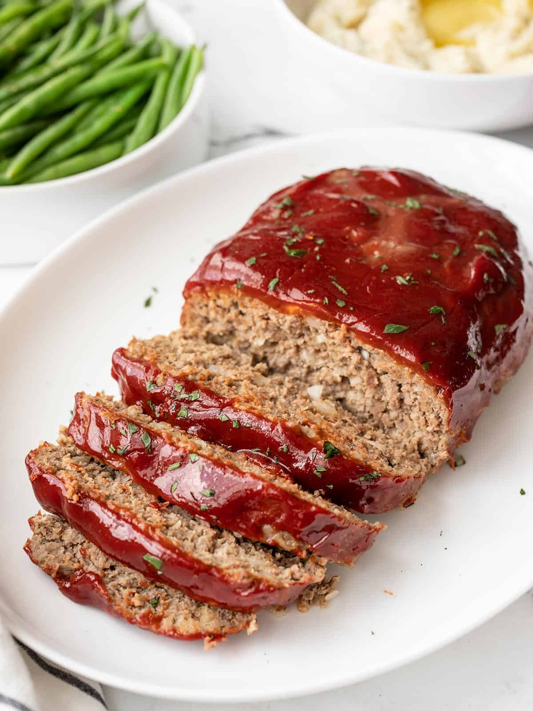

Turkey Meat Loaf

Description
For a healthier turkey meatloaf, after much trial and error I came up with this recipe. It's important to make
this on a jelly-roll pan (rimmed baking sheet) so the liquids can be drained off. Also, don't put the topping on
before the meatloaf has cooked for 30 minutes; ground turkey creates a lot of juices, so if you put the topping on
first it will become watery and runny
Ingredients
- 1 ½ pounds ground turkey
- ¾ cup crushed buttery round crackers
- ½ cup milk
- 1 small onion, chopped
- 1 egg
- 2 cloves garlic, minced
- 1 ½ teaspoons salt
- ¼ teaspoon ground black pepper
- ½ cup ketchup
- ¼ cup brown sugar
- 1 tablespoon Worcestershire sauce
Steps
- Gather all ingredients
- Preheat the oven to 350 degrees F (175 degrees C). Lightly grease a jelly-roll pan.
- Mix ground turkey, crushed crackers, milk, onion, egg, garlic, salt, and black pepper in a bowl. Shape mixture
into a loaf and place on the prepared pan
- Mix ketchup, brown sugar, and Worcestershire sauce in a separate bowl; set aside
- Bake meatloaf in preheated oven for 30 minutes; remove from the oven and drain off liquids. Top meatloaf with ketchup topping
- Return loaf to the oven and continue baking until no longer pink in the center, about 30 minutes more;
an instant-read thermometer inserted into the center should read at least 160 degrees F (71 degrees C)
- Serve and enjoy!